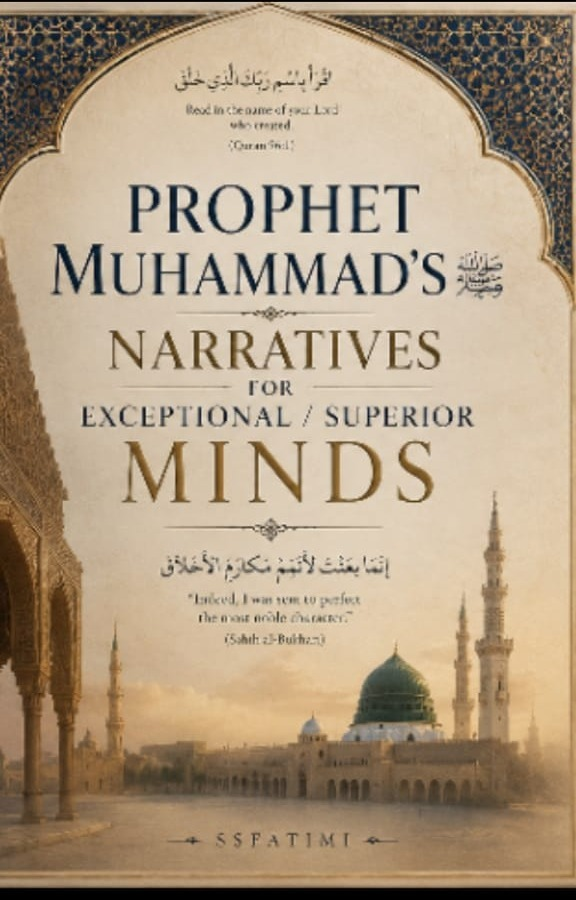
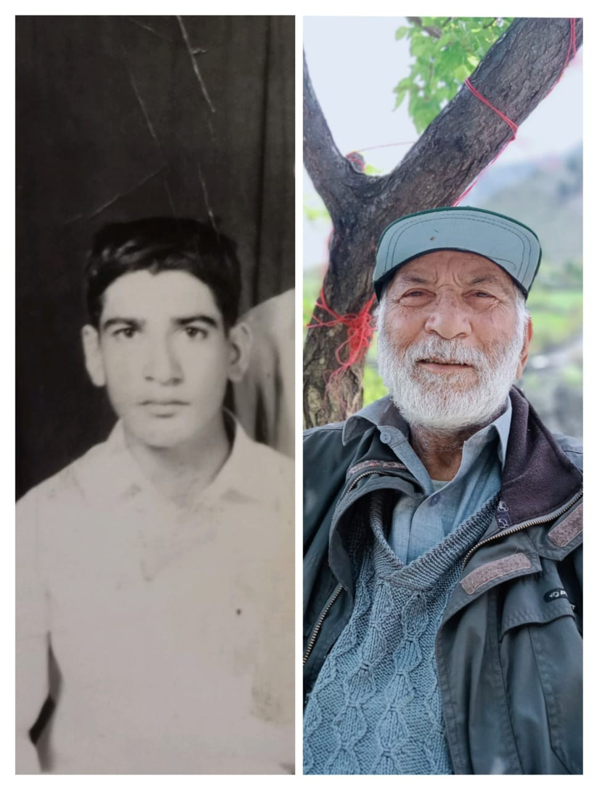

In preparation
Chitral · Pakistan
S. S. Fatimi
Learner·Searcher·Researcher·Teacher
A lifetime devoted to a single pursuit: to see things as they actually are. He reads the Qur’an with a lexicographer’s patience, the Prophetic tradition with a devotee’s tenderness, and the restless modern mind with uncommon compassion.
A guiding prayer
اللّٰهُمَّ أَرِنِي حَقَائِقَ الْأَشْيَاءِ كَمَا هِيَ
فِي أَنْفُسِنَا وَالْآفَاقِ وَفَوْقَ مَزْخَرَفِ الصُّوَرِ
“O God, show us the realities of things as they truly are — within ourselves, across the horizons, and beyond the ornamentation of appearances.”
Grant me the wisdom to perceive reality free from illusion, prejudice, fear, desire, and personal bias — to distinguish appearance from reality, falsehood from truth, and ignorance from wisdom.
Four pillars
i
Knowledge
is Light
ii
Thought
is Guidance
iii
Character
is Strength
iv
Change
is Life
“In the search for truth, let humility be our companion and wisdom our destination.”
One series · twelve volumes
Forthcoming works
Writing at the meeting point of revelation, philosophy, and the human condition. Every volume is in preparation.

S. S. Fatimi
The complete series
Lines of inquiry
Themes in progress
The research threads running beneath the series — each one worked out across Arabic, Persian, Urdu and English.
Qur’anic cosmology
The Cosmic Tasbīḥ
وَلَٰكِن لَّا تَفْقَهُونَ تَسْبِيحَهُمْ
On 17:44 — the seven heavens, the earth, and all within them glorify Him, “but you do not comprehend their glorification.” The universe may not be silent; our capacity to hear may simply be limited. A lesson in epistemological humility: the cosmos is a symphony of tasbīḥ, and the human soul is learning how to listen.
Qur’an 17:44 · 24:41 · 13:15 · 41:53The first constitution
Ṣaḥīfat al-Madīnah
إِنَّهُمْ أُمَّةٌ وَاحِدَةٌ مِنْ دُونِ النَّاسِ
A full reading of the sixty-four clauses of the Constitution of Madinah — the first written constitution in human history — drawn up between the Muhājirīn, the Anṣār, the Jews of Yathrib and the surrounding tribes. Its four foundations: unity, justice, coexistence, and freedom of religion.
Year 1 of the Hijra · 622 CEQuranic odyssey
The Quest for Meaning and Beyond
الرِّحْلَةُ القُرْآنِيَّة
Man is a traveller, and the Qur’an is the map and the compass. Five stations: knowledge (darkness to light), truth (illusion to reality), identity (who am I? — khalīfah), wisdom (data to nūr), and meaning (from “why” to worship). Not a journey upon the earth, but a journey in the self toward God.
20:114 · 17:81 · 49:13 · 2:269 · 51:56A philosophy of longing
Nostalgian Philosophy
فلسفۂ حسرت
Not love of the past, but love of the meaning the past once held. Read across four perspectives — existential, epistemic, aesthetic and spiritual — and through three griefs: ḥasrat of place, of time, and of being. Nostalgia begins where meaning ends.
A concept note toward the seriesAfter Shariati
The Four Prisons
طبیعت · تاریخ · جامعه · خویشتن
Nature, history, society, and the self. The first three are external determinants; the fourth — desire, comfort, status, ego — is the deepest and most subtle. Freedom is not the disappearance of these forces but the consciousness that recognises and resists their dominion.
Ali Shariati · philosophical anthropologySolitude and integrity
Ali’s Twenty-Five Years
مَيْدَانُكُمُ الْأَوَّلُ أَنْفُسُكُمْ
On political deprivation read as a discipline rather than a defeat. Silence as a refusal to legitimise a corrupted throne; loneliness as the price of wisdom. “When you see someone alone, do not think them weak — crowds gather around hypocrisy, but truth stands even in solitude.”
A study after Dr. Ali ShariatiWords he is collecting
A working lexicon
Terms carried across languages, because no single tongue holds the whole of them.
- Ataraxiaἀταραξία
- Freedom from disturbance. Tranquillity of mind in Epicurean and Stoic thought — سکونِ قلب, طُمَأْنِينَة.
- Eleutheromania
- An almost frantic longing for freedom; a zeal to escape every constraint — جُنُونُ الحُرِّيَّة, جنونِ آزادی.
- Epistemophobia
- Fear not of study but of what one might discover — رُهَابُ المَعْرِفَة. Its shallower cousin is sophophobia, the fear of learning itself.
- Saudade
- The presence of an absence. Arabic حَنِينُ الرُّوح, the longing of the soul; Persian دلتنگیِ جان, the ache that proves love.
- Murāwaghahمُرَاوَغَة
- Deliberate evasion: ambiguity, delay, selective interpretation and shifting ground, used to avoid accountability without open confrontation. Not always deceit — sometimes only tactics.
- Bākhiʿبَاخِع
- Grief that consumes the self. A word occurring only twice in the Qur’an, both times of a heart consuming itself with sorrow over others — al-Kahf 18:6, ash-Shuʿarāʾ 26:3.
- Fann se bē-bahraفن سے بے بہرہ
- Literally: one to whom art has given no share. The person absorbed by utility and wealth who mocks poetry and the fine arts — the temperament The Pleasure of Learning is written against.
- Ar-Rāsikhūn fī al-ʿIlmالرَّاسِخُونَ فِي العِلْم
- Those firmly rooted in knowledge — set against mere ʿabqariyyah, brilliance. The distinction Volume Ten is built upon.
Ideas in formation
From the notebook
Fragments from work currently in progress — kept as they were written.
The safety valve
Why this book exists
“When my inner being became a pressure cooker of relentless thoughts, questions, and unspoken burdens, I found only one way to survive: I opened a valve. Through writing, reflection, and conversation with my own soul, I released the steam before it consumed me.”
“This book is not a literary exercise; it is a breathing space for a crowded soul, a valve through which the pressure of existence finds release before it turns into ruin.”
Toward My Mind Works as a Pressure CookerMarginalia
Even Socrates would not have found peace
سقراط و افلاطون بھی آج ہوتے تو ان کا مائنڈ بھی پریشر کوکر ہوتا۔۔۔ اس وقت بھی ان کو قرار نہ تھا۔
“Were Socrates and Plato alive today, their minds too would be pressure cookers — nor did they have peace even then.”
The cauldron of pressure
Not every fire destroys
“How many minds have grown weary under their own burden, yet expanded the world with the vastness they created. Great ideas are not born in emptiness, but in the furnace of suffering, in the silence of contemplation, and under the pressure of responsibility.”
عقل… دیگِ فشارA note on art
Music is revelation, not creation
“The true artist does not invent the eternal harmony — he discovers it, listens to it, and reveals it.”
الموسيقى وحيٌ لا اختراع
موسیقی وحی است، نه اختراع
A rule of conduct
See · Act · Intend
See with a divine eye.Act with a human heart.Do it without an agenda.
Pure intention, divine view, human action: to look upon creation through the attribute of mercy, to walk the earth as a true human being, and to act for God alone.
Iqbal · a working translation
The diver and the shore
“Deprived of the ocean’s bounty remained that diver who forsook not the shore’s familiar company.”
The shore is comfort, the crowd, the merely familiar. The ocean’s wealth is the secret, khudī, the pearl in the deep. You cannot reach the deep if you fear leaving the shallow.
Rumi · Ghazal 3104
Circle the Kaaba of the heart
هزار بار پیاده طواف کعبه کنی
قبول حق نشود گر دلی بیازاری
“Though you circle the Kaaba a thousand times on foot, it will not be accepted if you have wounded a heart.” The Kaaba is not stone; it is purpose. To break a heart is to break the House of God.
Iqbal · Payām-i-Mashriq
One cup, a thousand songs
جهان یا رب چه خوش هنگامه دارد
همه را مستِ یک پیمانه کردی
“Thou hast made all drunk from a single cup; Thou hast made eye to mingle with eye, but heart from heart and soul from soul Thou hast kept apart.” Unity of source, infinity of expression.
Qur’anic lexicon
بَاخِع — grief that consumes the self
فَلَعَلَّكَ بَاخِعٌ نَّفْسَكَ عَلَىٰ آثَارِهِمْ
A word occurring only twice in the Qur’an — both times describing a heart consuming itself with sorrow over others.
al-Kahf 18:6 · ash-Shuʿarāʾ 26:3Chitral · Pakistan
A life in one pursuit
Teaching · Training · Learning · Character · Creativity · Critical thinking · Human development

Professor Syed Shams-un-Nazar Fatimi writes from Chitral, in the mountains of northern Pakistan. He describes himself plainly: a learner, a searcher, a researcher, a teacher — an educationist, perhaps.
Alongside the series he is preparing a Comprehensive Teachers’ & Trainers’ Manual, written for teachers, trainers and learners alike.
تدریس • تربیت • تعلّم • کردار سازی • تخلیقی صلاحیت • تنقیدی فکر • انسانی ترقی
Much of this thinking was formed in conversation. He returns often to the Thinkers’ Forum, Chitral, built jointly with his friend Professor Ubaid-ur-Rehman, and to a companion project on education. Of his friend he writes simply: “I still feel his presence.”
“Truth stays in solitude.”
Correspondence
Write to him
Readers, students, publishers and fellow seekers are all welcome. He answers in English, Urdu, Arabic and Persian.
ssfatimi@gmail.com